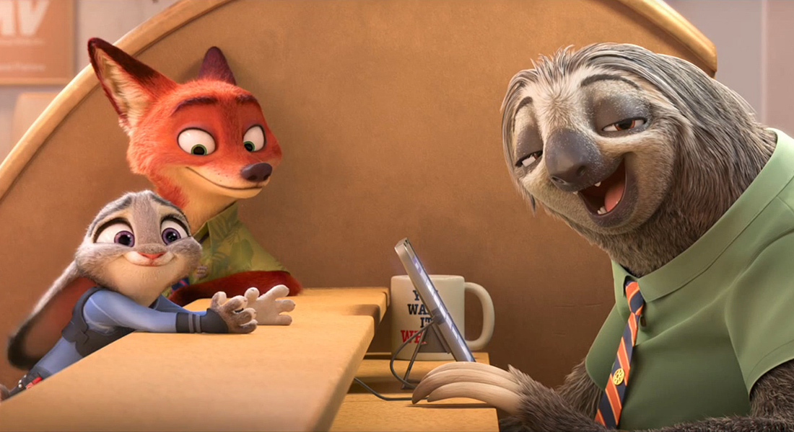
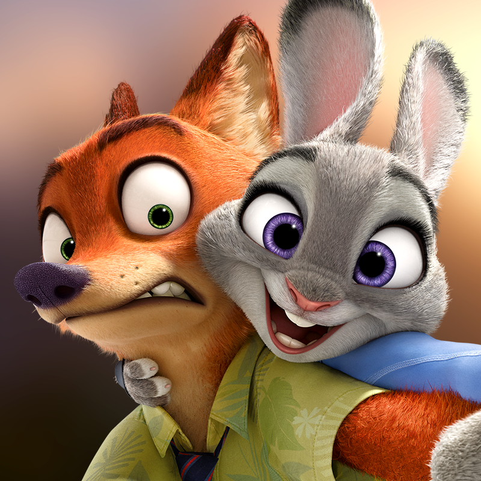

Zootopia

Zootopia es una película animada de Disney que combina humor, aventura y un mensaje profundo sobre la diversidad y la inclusión. La historia se desarrolla en una ciudad moderna habitada por animales antropomorfos, donde depredadores y presas conviven en aparente armonía.
La trama sigue a Judy Hopps, una coneja optimista y valiente que se convierte en la primera oficial de policía de su especie en Zootopia. A pesar de enfrentar prejuicios y subestimaciones, Judy se une al astuto zorro estafador Nick Wilde para resolver un misterioso caso de desapariciones que amenaza con desestabilizar la paz en la ciudad.
La película aborda temas como los estereotipos, la discriminación y la importancia de trabajar juntos para superar las diferencias. Todo esto se presenta de manera entretenida, con personajes entrañables y un mensaje inspirador que resuena tanto en niños como en adultos.
Menu Principal

